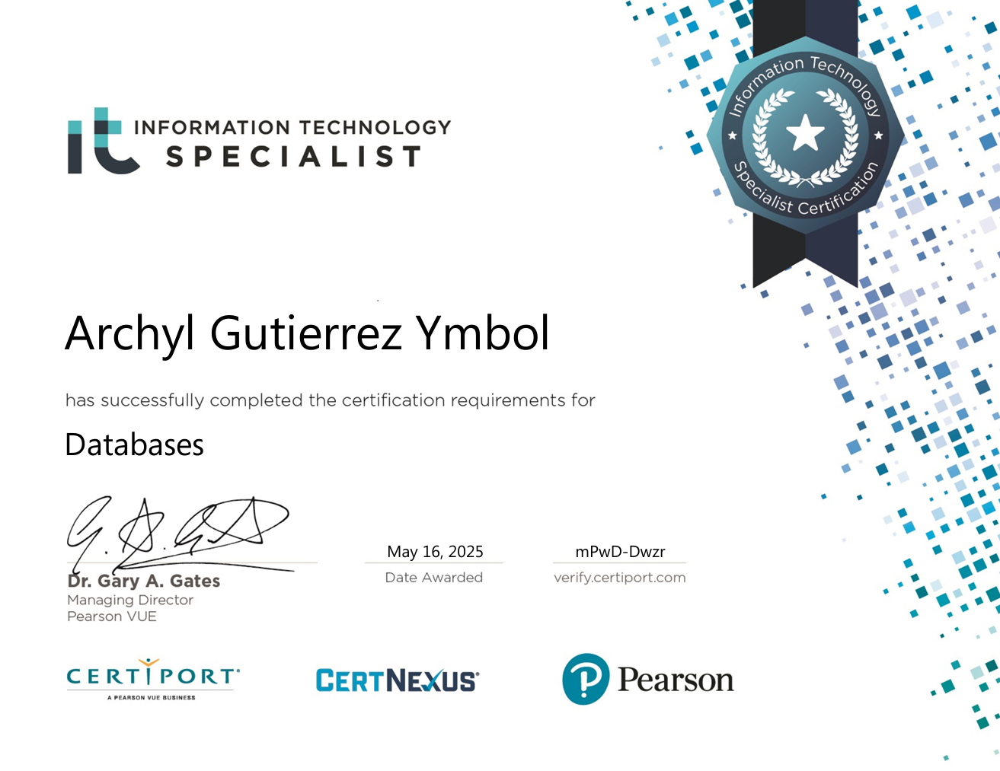

UI/UX and Frontend Interest
I have a strong interest in user-centered design, clean interfaces, and visually appealing experiences.
Computer Science Student
I am a Bachelor of Science in Computer Science student at the University of Mindanao seeking an Internship/OJT opportunity in the technology industry. I enjoy creating user-friendly interfaces and practical digital solutions, while staying comfortable with backend work when needed.
About Me
I enjoy building practical technology solutions while paying attention to how people use and experience them.
I have a strong interest in user-centered design, clean interfaces, and visually appealing experiences.
I have experience working on academic and personal projects using frontend, backend, database, and applied computing tools.
I am interested in software development, machine learning, cybersecurity, and learning new frameworks through real projects.
Technical Skills
Featured Projects
A centralized construction management platform for project tracking, team management, payroll, inventory, and financial reporting.
Machine learning-powered waste classification that identifies six garbage categories through a mobile-friendly web application.
Machine learning project using Dota 2 match statistics to predict match outcomes and identify MVP players.
A restaurant management system that streamlines ordering, inventory tracking, sales management, and reporting.
A Django-based web application demonstrating Python programming concepts, OOP, and web development fundamentals.
A WordPress-based gym membership website with modern design, responsive layouts, and smooth animations to create an energetic user experience.
Certifications
Certiport / Pearson VUE certification awarded on May 21, 2026.

Certiport / Pearson VUE certification awarded on May 16, 2025.
Contact
I am open to learning from professional teams and contributing to technology projects with care, consistency, and curiosity.
Download Resume